Step 1: Prototyping
Once you are done with your initial wireframe designs, you actually have a look at your final outcome within Figma before jump in to the coding part. This is called Prototyping. Figma’s prototyping features allow you to create interactive flows that explore how a user may interact with your designs.
Flows and Starting Points
A flow is the network of frames and connections in a single page. A prototype can map out a user's entire journey through your app or website, or it can focus on a specific segment of it via its own flow.
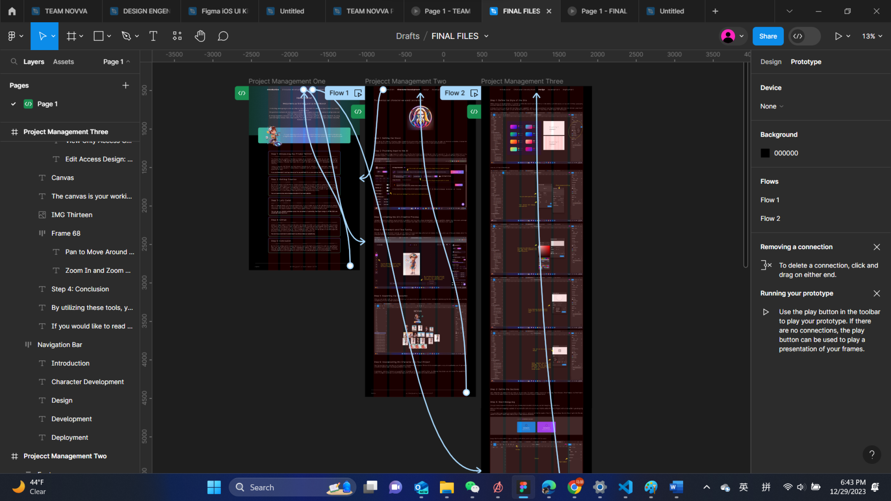
- Select the hotspot for the connection.
- Click + to create the connection.
- Drag it to the destination.
- If there are no existing connections, Figma will make the first frame a starting point.
Create Interactions and Animations
- Open the Prototype tab in the right sidebar.
- Add interactions.
- Set interaction details.
- Apply an animation.
- Preview your animation.
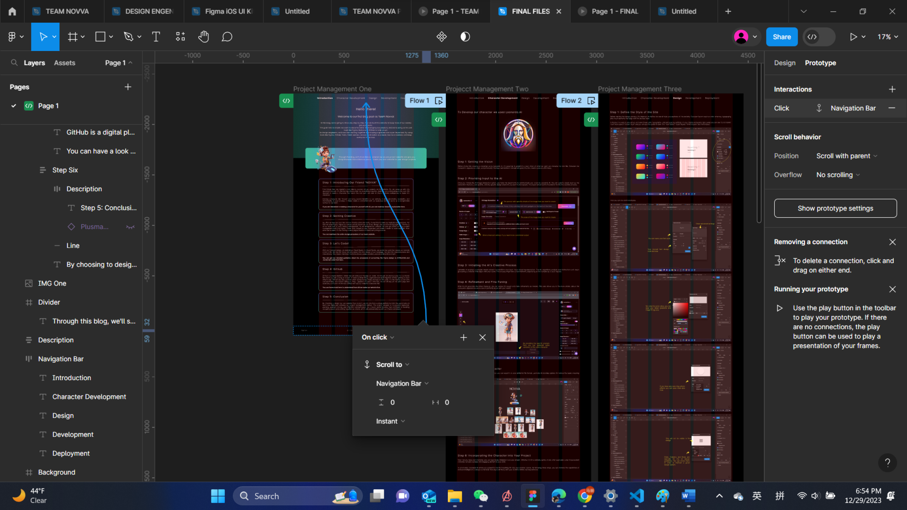
Prototyping your designs in this way will actually help the developers to understand your requirements. Not only that, you can also iterate on your ideas depending on the collaborators feedbacks before the development stage.
Step 2: Utilizing Figma's Dev Mode
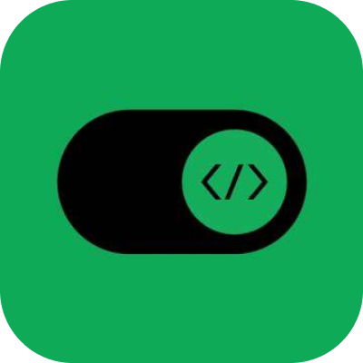
After you've designed your webpage in Figma, you can switch to Figma Dev Mode.
Dev Mode in Figma design gives developers everything they need to navigate design files and transform designs into code. With Dev Mode, designers and developers stay on the same page, making sure important details aren’t lost in the handoff process.
In the following section we tried to explain the basics of the Figma Dev Mode in a simple manner.
Dev Mode is a developer-focused interface for inspecting and navigating designs. You can access Dev Mode in any Figma design file.
To toggle between Design Mode and Dev Mode
- Open a Figma design file.
- Click the Dev Mode toggle at the top of the page or use the keyboard shortcut Shift+D.
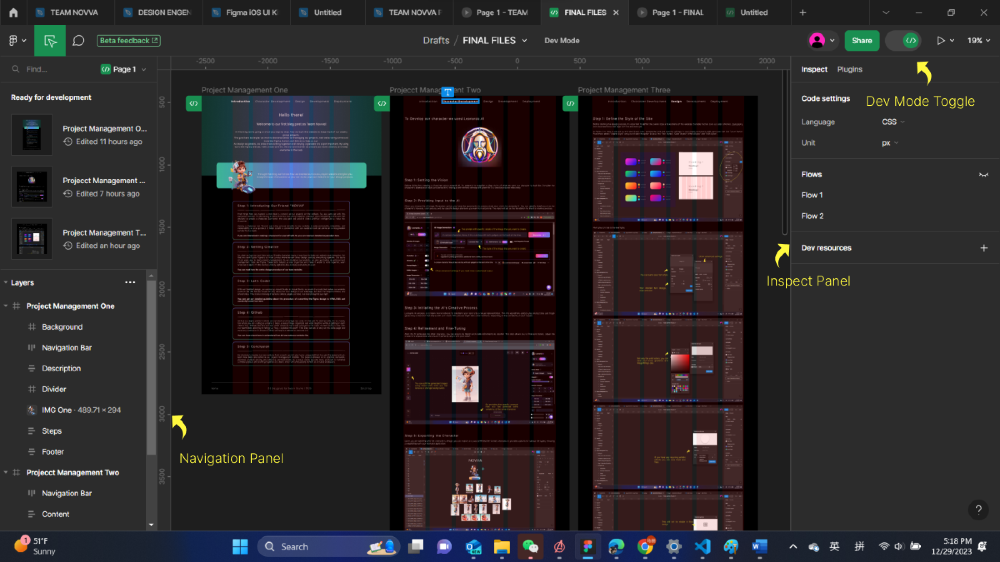
In Dev Mode, the left sidebar provides an easy way to move between designs marked as ready for development.
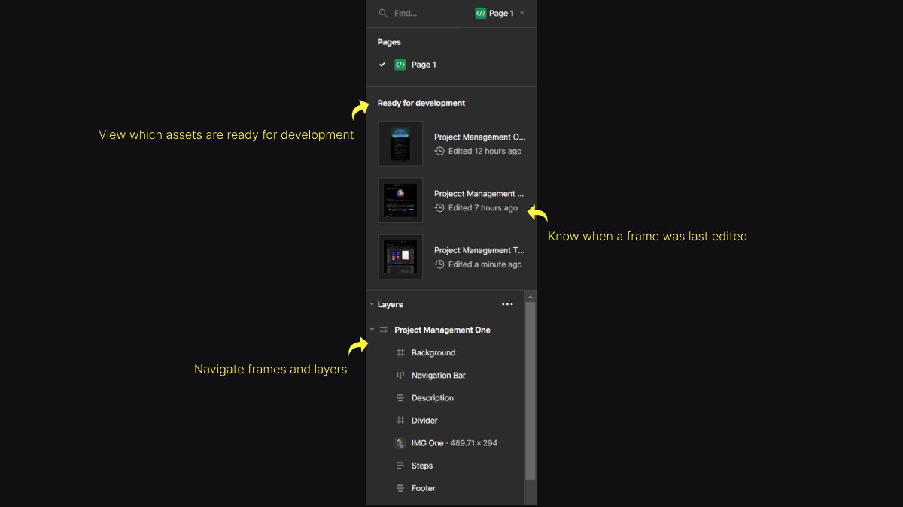
The inspect panel displays design specs and relevant component information needed to understand a design and transform it into code.
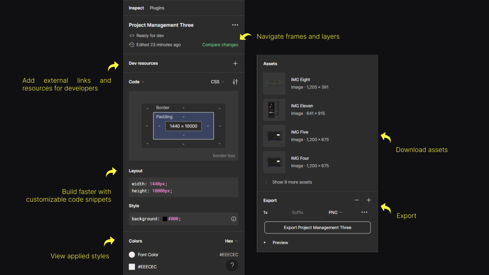
Step 3: Setting Up Visual Studio Code
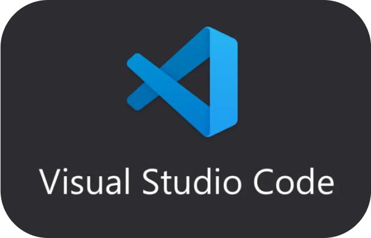
Visual Studio is a versatile integrated development environment (IDE) that supports web development.
You can download visual studio from https://code.visualstudio.com/ this website.
We personally choose Visual Studio Code because of the Figma for VS Code Extention
The Figma for VS Code extension lets you navigate and inspect design files, collaborate with designers, track changes, and speed up design implementation—all without leaving your development environment.
Install the Figma Plugin for VS Code
To get started with Figma Dev Mode in VS Code, you need to install the Figma plugin. Follow these steps:
1. Open the Extensions view in VS Code.
2. Search for “Figma” and install the Figma plugin by Figma Design, Inc.
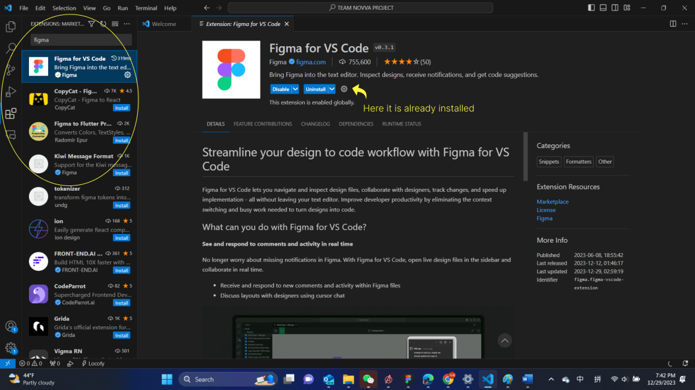
Open Figma designs in VS Code
There are a couple of ways to open a design file through the VS Code extension:
- Set CSS as your preferred language in Code settings or the Code section of the Inspect panel.
- Click on a top-level frame.
- In the Inspect panel, click Options next to the layer name.
- Select Open in VS Code.
- Open VS Code.
- Click Figma in the activity bar, or find Figma for VS Code from your list of extensions.
- In the primary sidebar under Files, click on the design you want to open.
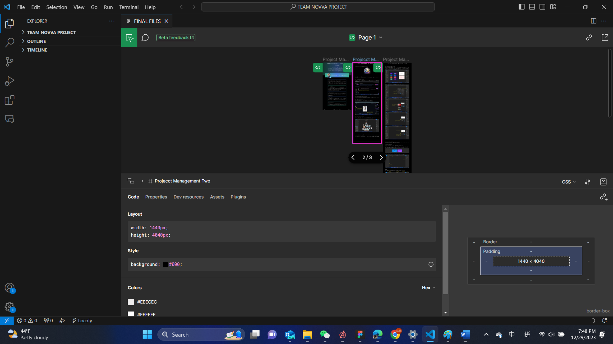
Auto-complete code suggestions
The Figma for VS Code extension provides auto-complete suggestions based on the selected layer. This is helpful if you’re building components that don’t have an existing implementation in your codebase.
Step 4: Preparing Files and Images
We first need to create a project folder. You can follow these steps and make a project folder.
Then you can create another folder named “public”,inside the main folder “Team Novva Project”. You will use this folder to save all the images you are importing from Figma.
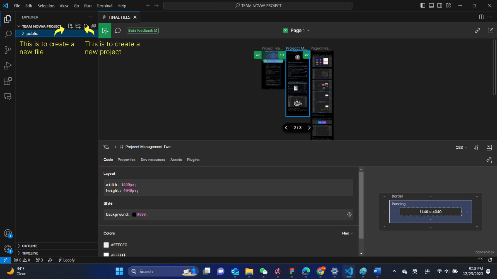
In our case, we named our homepage as “index.html” and the related style sheet as “index.css”. For other pages also we will follow the same structure for naming files in order to keep things organized.
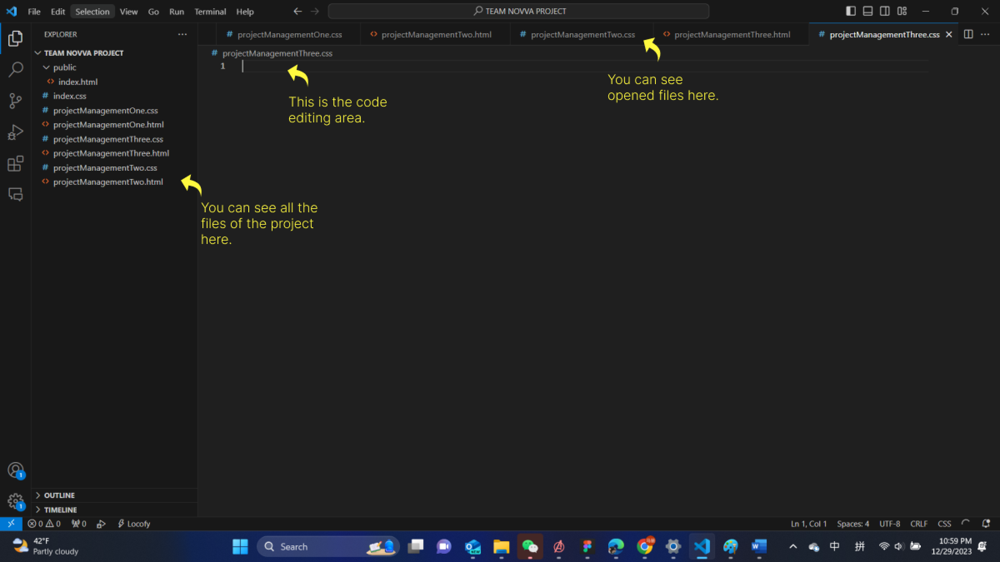
Step 5: Let’s Start Coding!
With our template prepared and images exported, we’re ready to start coding. In our project we use only HTML and CSS to make the webpage.
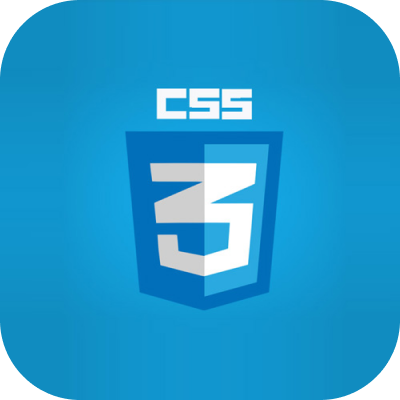
Here we will explain the development of “Project Management Introduction page” using HTML and CSS.
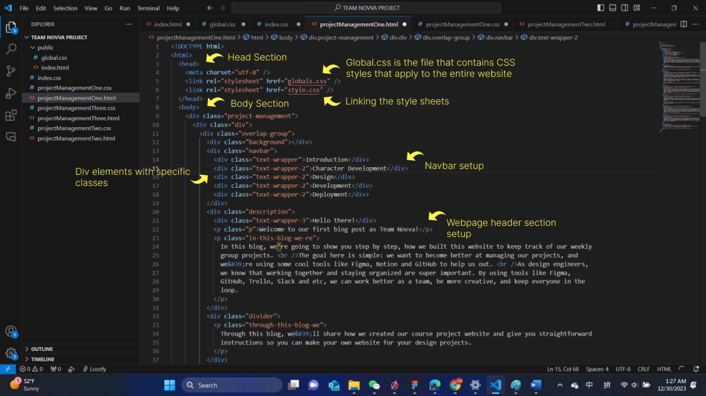
We’ll start with the basic shell: creating our required documents, adding basic HTML, sets the document type and character set, linking in our stylesheet, and loading the fonts we’ll need.
The last element of our groundwork is to set up some base layout classes we’ll use throughout the content of the site.
Create the Navigation Bar
The next thing is creating the navigation bar. At this point we have not mentioned the links to the other sections and we will eventually edit the code.
Create the Header Section
We’re now ready to start coding up the content, beginning with the headers that comprise the upper portion of the page.
Adding Remaining Sections
We can follow the basic HTML syntax and complete the basic webpage using div elements with specific class names to style and position of the contents.
Once the basic structure is completed, we can start laying out the content of the webpage using CSS.
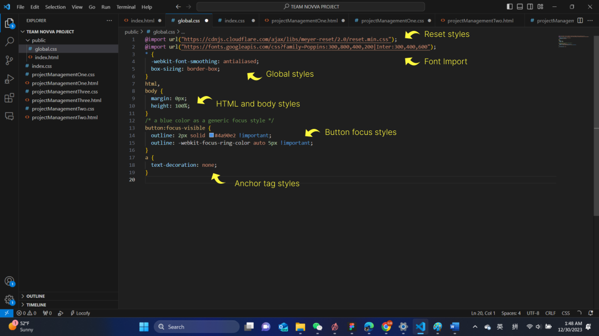
The @import rule is used to import a reset stylesheet from Meyer's Reset (https://meyerweb.com/eric/tools/css/reset/). This helps in providing consistent default styles across different browsers, removing any default styling that browsers may apply.
Another @import rule is used to import fonts from Google Fonts. Two font families are imported: Poppins and Inter, with various font weights.
The * selector applies the following styles to all elements on the page:
-webkit-font-smoothing: antialiased;
Enhances the rendering of fonts for better clarity on WebKit browsers.
box-sizing: border-box;
Sets the box-sizing property to border-box, ensuring that padding and border are included in the element's total width and height.
html, body selectors set margin to 0 and height to 100%, ensuring there is no default margin and the body takes up the full height of the viewport.
button:focus-visible selector defines styles for the focus state of buttons. It adds a blue outline (#4a90e2) to the button when it receives focus. The -webkit-focus-ring-color property is used for WebKit browsers. The use of !important in the button:focus-visible rule indicates that these styles should take precedence over other styles, ensuring the focus styles are consistently applied.
A selector removes the default underline from anchor tags (text-decoration: none;).
While the global css file define the visual appearance of entire webpage the local css file define the visual appearance of different elements within the specific section of the webpage. It set up layout, colors, typography, and other visual aspects to create a cohesive design.
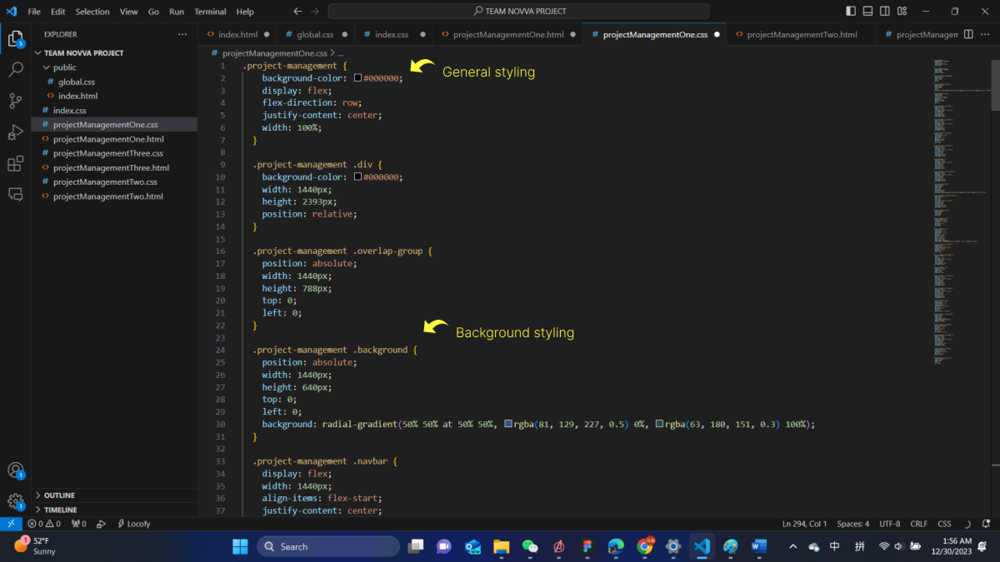
This explanation was a quick step guide to build a simple webpage using html and css. If you are interested in learning from scratch you can follow these tutorials to get a deep understanding.
Freen Code Camp
W3school
codeacademy
Step 6: Testing and Refining
While writing the code in the editor try to test your webpage in a web browser to ensure it looks and functions as intended. Refine the code as needed to achieve the desired result.
Once you are satisfied with your code, you can deploy your webpage to a web hosting service or a local server, making it accessible to users. In our case we have used GitHub as the next step.
In summary, Figma's Dev Mode allows you to inspect your design elements and export code assets. You can then use Visual Studio to create the HTML, CSS, and JavaScript for your webpage, allowing you to convert your design into a functional and interactive website. For more references you can follow these websites:
Figma 1
Figma 3
Figms 3
figma community
Visual studio community